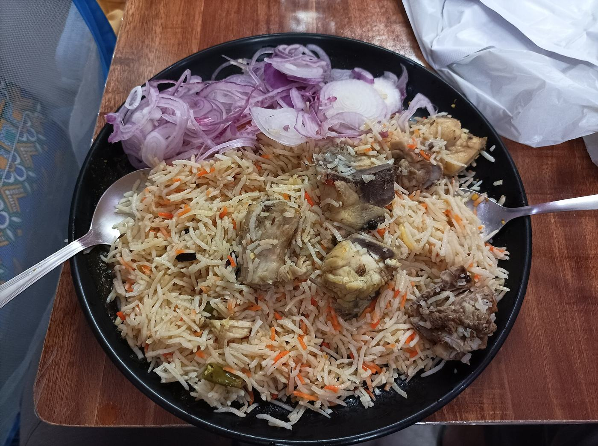
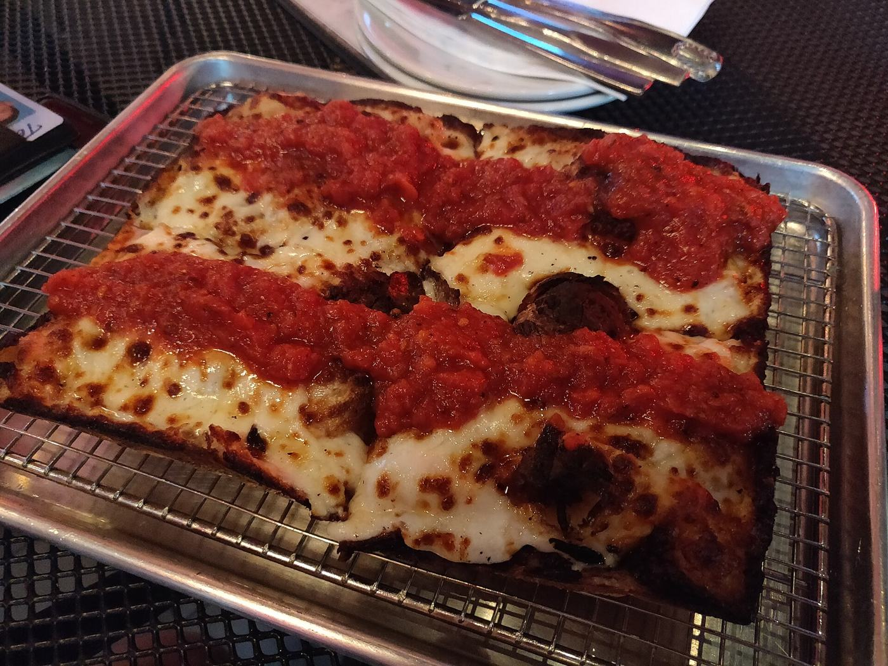

ABOUT
お店の由来と想い
とまりぎは、奥様が別のオーナーのもとでカフェを始めたことがきっかけと、取材記事で紹介されています。お子さまが生まれたあと、ご主人が店を引き継ぎ、ご夫婦で営むようになりました。
お子さまを連れて出かける大変さを知っているからこそ、子どもと一緒に来やすいお店にした、とご店主は語っています。飲食店そのものよりも、人と人がつながる場所をつくりたい、という想いがあるそうです。
店名「とまりぎ」の意味は、確認できる記載がありませんでした。ここでは、鳥がひと休みする「止まり木」という言葉の連想を、制作側のイメージとして添えています(お店の説明ではありません)。
- 家では話しにくいことも話せる「サードプレイス」を目指している、と紹介されています。
- 「第二の実家というからには、変わらずここにあり続けないと」というご店主の言葉が記事にあります。
- 昼も夜も野菜が多めで、玄米を混ぜたご飯など栄養バランスにも配慮していると紹介されています。
- キッズチェア・オムツ替え台があり、「赤ちゃんの駅」に登録されているとのことです(2023年5月時点の記事)。


MENU
メニュー
以下は2023年5月時点の取材記事で紹介された内容です。現在の提供内容・価格は準備中(確認中)です。写真はイメージで、実際の料理ではありません。

ランチ
- チキン南蛮プレート
- 特製唐揚げプレート
- ハンバーグプレート
- タコライスプレート

夜ごはん・実家定食
- 肉と魚が日替わりの「実家定食」
- 定食・ピザ・パスタ・丼など
- 具だくさんのスープ

スイーツ・ドリンク
- 奥様のスイーツ(季節限定も)
- お弁当・テイクアウト
- お子さま向けメニュー



価格: 準備中
VOICE
口コミ(イメージ例)
以下は制作側が考えた創作のイメージ例で、実在のお客様の声ではありません。
野菜のおかずとスープが付いていて、食べたあとに体が軽くなるような気がしました。
小さな子どもがいても気兼ねなく過ごせそうで、ほっとできる場所だと思います。
仕事帰りに寄って、実家のようにゆっくりごはんを食べられたら嬉しいです。